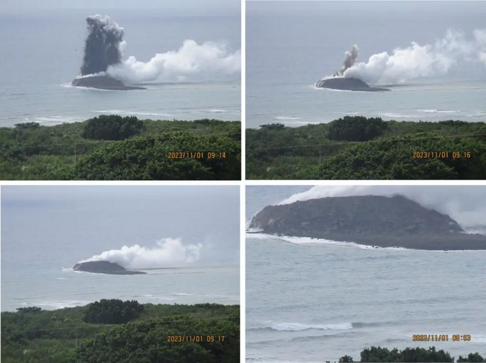
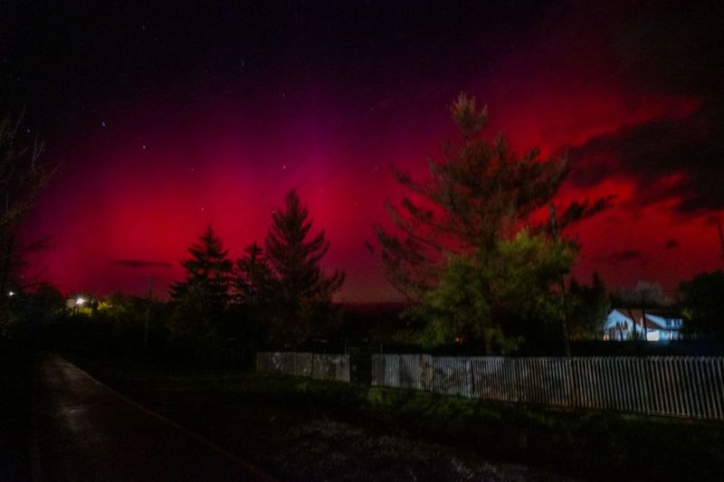

:31.13 ₺
:31.13 ₺  :28.68 ₺
:28.68 ₺
 :1807.8 ₺
:1807.8 ₺

JAPONYA'DA VOLKANİK HAREKETLER SONRASINDA YENİ BİR ADA DOĞDU
Japonya karasularında bulunan bir deniz altı yanardağının patlaması sonucu oluşan kara parçası, başkent Tokyo’nun bin 200 kilometre uzağında ve 2. Dünya Savaşı’nın en kanlı çarpışmalarının olduğu Iwoto adlı adanın açıklarında yer alıyor.
KUZEY IŞIKLARI, TÜRKİYE DAHİL OLMAK ÜZERE ÇOK SAYIDA ÜLKEDE GÖRÜLDÜ
"Aurora Borealis" adıyla da bilinen Kuzey Işıkları, ABD, Kanada, İngiltere, Macaristan, Ukrayna gibi çok sayıda ülkede ortaya çıkarken, Türkiye’den de sosyal medya kullanıcıları pembe, kırmızı ve yeşile bürünmüş gökyüzünün fotoğraflarını paylaştı.
ELON MUSK: YAPAY ZEKA İNSANLIĞIN YOK OLMASINA YOL AÇABİLİR
Daha önce Twitter olarak bilinen X platformu, Tesla ve Space X şirketlerinin sahibi milyarder iş insanı Elon Musk, “çevreci hareketlerin” programlaması durumunda yapay zekanın insanlığın yok olmasına neden olabileceği uyarısında bulundu.